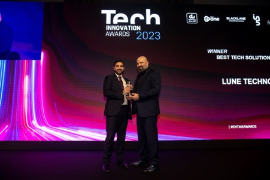

Lune Wins 'Best Tech Solution for Banking' at Entrepreneur Awards 2023
We're thrilled to share some exciting news! Lune Technologies has just won the 'Best Tech Solution for Banking' award at the Entrepreneur Tech Innovation Awards 2023.
Published on

Lune’s Award Winning Achievement
We're thrilled to share some exciting news! Lune Technologies has just won the 'Best Tech Solution for Banking' award at the Entrepreneur Tech Innovation Awards 2023. This win is a testament to our ongoing commitment and dedication to assisting banks and fintech entities across the region in delivering enhanced financial solutions through transaction data enrichment. It's a proud moment for the entire Lune team, and we can't wait to see what comes next.
Empowering Better Banking Experiences

Renowned for recognizing excellence and innovation in the tech world, these awards are a benchmark of success in the industry. They spotlight the most inventive and impactful solutions in various sectors, including banking technology.
Each year, the awards draw attention to those who are innovating in tech. It's a gathering of the brightest minds and most creative solutions, making banking smarter, more user-friendly, and one that solves a problem.
Our Products Winning Edge
At the core of our success is our advanced transaction data enrichment engine. It categorizes each transaction, creates a visual experience for end banking users so they could see brand names and logos, and transforms raw data into easy-to-understand insights that banking teams could build on. Alongside this, our Money Management SDK empowers banking users to manage expenses, tracking budgets, and setting financial goals. As for analytics, Lune Insights, offers a comprehensive analytics dashboard that dives deep into spending patterns and forecasts market trends. All of these offerings collectively reflect our commitment to enhancing the banking experience. It's this fusion of innovation and practicality that sets us apart and paves our way forward in the tech-driven financial landscape.
A Big Thank You to the Lune Team
Special thanks to Alexandre Soued, Samuel Abdelmalak, Helal Tariq Lootah, Musab Al Dahyyat, Ismail Belkaid, and the entire team for their exceptional efforts leading to this accomplishment.
As always, this recognition fuels our ongoing mission to democratize access to financial data for all, motivating us to scale greater heights.